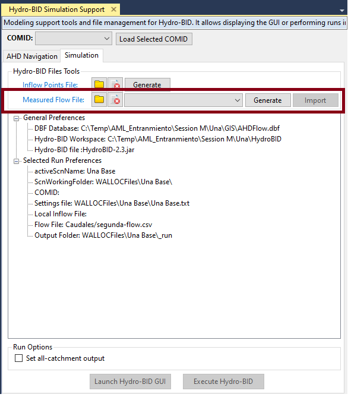
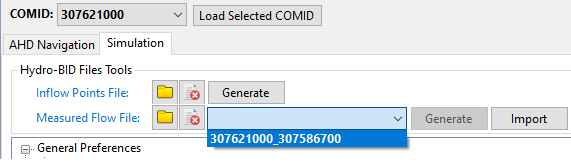
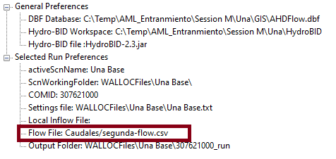

Measured Flows Handling
Hydro-RAM -> Hydro-Ram Simulation

WaterALLOC provides funtionality to transfer measured flows from MODSIM to Hydro-RAM and viceversa.
This tools handles negative values to flag MODSIM missing values and blank values to represent missing values in Hydro-RAM
MODSIM to Hydro-RAM
The measured time series in MODSIM can be exported to a Hydro-RAM flow file using the 'Generate' tool. The export process will promt the user with a dialog to save the file with a new name. The newly created file is setup in the Hydro-RAM settings as the flow file for the active scenario.
The measured flow units required for Hydro-RAM are cubic meter per second.
Note that the tool doesn't peform a unit conversion.
Hydro-RAM to MODSIM
The csv file separate values with commas. The first row includes the heading of the columns:
Date, Flow(cms)
-
The MODSIM links available to exchagne measured flow correspond to the outflow links of the node linked to the selected COMID. The current outflow links are populated when the COMID is selected.

-
The flow file in the active scenario is used to import the flow to MODSIM.

-
The measured flow in the flow file will be imported into the measured flow time series for the MODSIM link selected in the import tool.
The names of the first row is not used to map columns so the order of the columns needs to be as shown above.
The date format correspond to the Hydro-RAM format dd/MM/YYYY
The flows are assumed in cubic meter per second (cms)